あたらしい歯、
あたらしい私。
9:30-18:30
休業日日・祝日
あたらしい歯、
あたらしい私。
歯科技工士
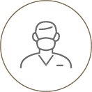
データだけではなく
実際に患者さんの
口腔内を見ることができる
患者さん
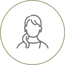
歯の色や形を相談し
歯を作る体験ができる
歯科技工所とは、歯科医師により形作られた歯を元に、補綴物（詰め物や被せ物）を作製する場所です。当技工所では、通常関わることが少ない患者さまの口腔内を直接確認し、ヒアリングを行いながら補綴物の製作を行っています。
ぜひあなたの「こんな歯にしたい」という想いを聞かせてください。私たちは、歯を作るプロフェッショナルとして、あなただけの「特別な歯」をデザインし、笑顔をご提供します。
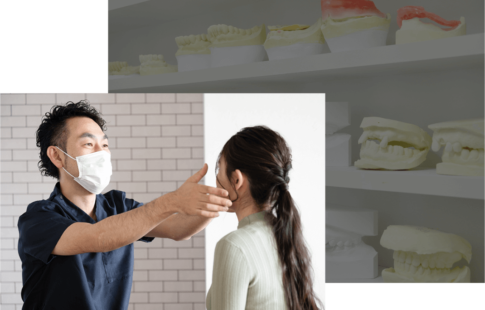
歯を作る歯科技工士と患者さまがお会いする機会はあまり多くありません。しかし、私たちケーズデンタルクリエイトでは患者さまに近いところで歯を作ることを大切に考え、「歯を作るプロ」として、患者さまのお顔や性格・話をした雰囲気から人柄を加味して、歯を作っています。
大切な補綴物をつくる歯科技工士としては、できるだけ「患者さまと直接打ち合わせしたい」と考え、クリニックのように気軽に来られる歯科技工所をつくりました。そして、直接患者さまのご希望を伺い、それぞれにあったオーダーメイドの歯を製作しています。
また、私たちからも患者さまへ「このような歯はいかがですか？」と提案させていただくこともあります。
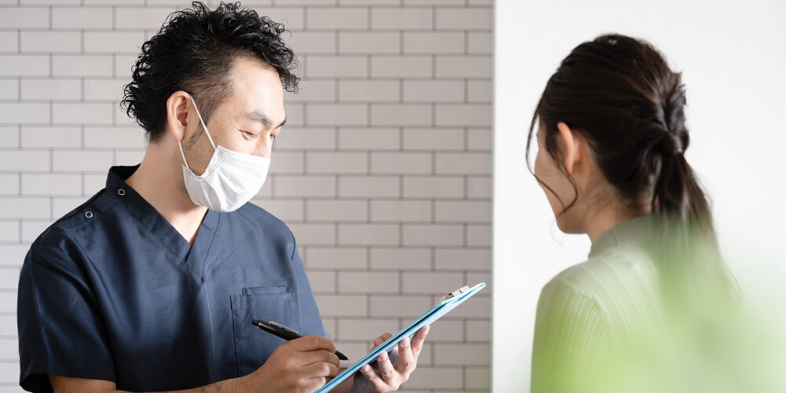
お顔や骨格が一人ひとり違うように、歯の大きさや形も人それぞれで異なります。また、お口まわりの見た目に関してお悩みをお持ちの方もいらっしゃいます。
ひとつとして同じケースはないため、当技工所では患者さまとしっかりと向き合って顔貌や歯の形状をふまえ、ご要望をカタチにするために丁寧なヒアリングに努めています。こだわりは遠慮なくお申しつけください。
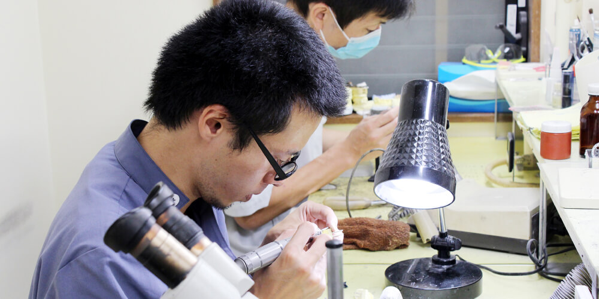
当技工所では、25年の技工物製作の実績があります。今までの経験や実績をもとに患者さまのオーダーをかなえるお手伝いができればと思います。一緒に作り上げて、患者さまにご納得いただきたいと考えています。
他にもIOSスキャナーを活用したミリングマシーンを完備し、光学スキャンにも対応するなど最新の設備環境を整え、歯科医院さまにも満足の補綴物を提供できるよう精度向上に努めています。
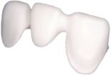
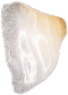
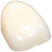
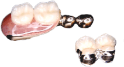
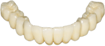